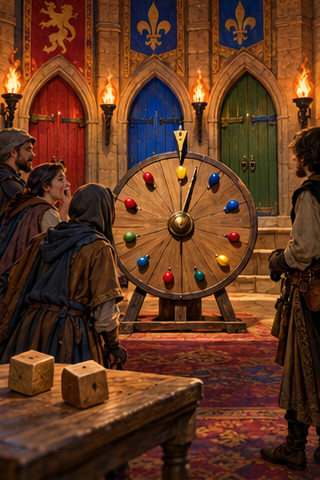
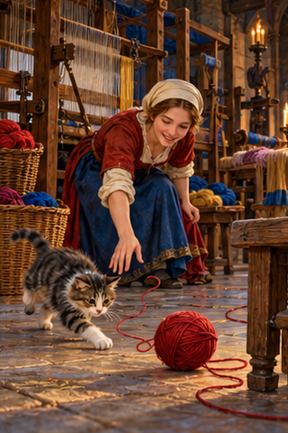
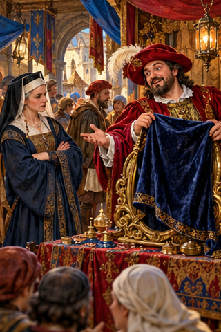
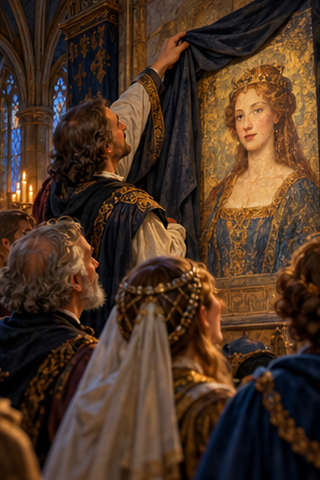

PDD Batch 07 — review only
Ten 320×480 portraits, in manifest order. Not installed.
Original composite1. PDD 84 — pericia
pdd84.jpg
2. PDD 85 — aleatorio/a
pdd85.jpg
3. PDD 86 — bola de estambre
pdd86.jpg4. PDD 87 — darse vidilla
pdd87.jpg
5. PDD 88 — vendehumos
pdd88.jpg6. PDD 89 — a lo hecho, pecho
pdd89.jpg7. PDD 90 — Enraizarse
pdd90.jpg8. PDD 91 — connotación
pdd91.jpg9. PDD 92 — Asomar
pdd92.jpg
10. PDD 93 — desvelamiento
pdd93.jpg